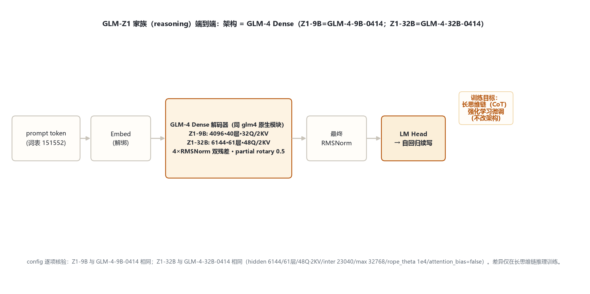
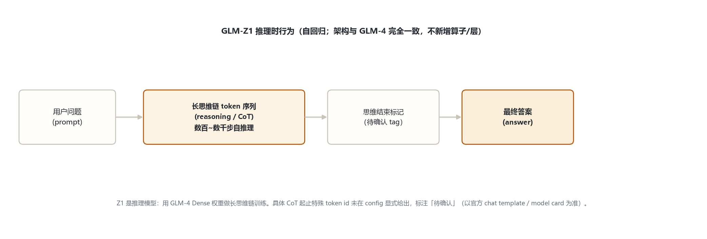

本页以 官方 config（2026-10-31 hf-mirror 留档 _tools/_cfgpull/）为唯一依据。核心事实：Z1 的差异在训练目标（长思维链推理），不在结构——config 与 GLM-4-0414 两个 Dense 版本逐项相同。机制引用 glm_4/index.md。
| 字段 | GLM-Z1-9B-0414 | GLM-Z1-32B-0414 | 等价于 |
|---|---|---|---|
| 入口 / 形态 | Glm4ForCausalLM（Dense 推理） | Glm4ForCausalLM（Dense 推理） | 原生 glm4 |
| hidden_size | 4096 | 6144 | 9B / 32B-0414 |
| num_hidden_layers | 40 | 61 | 40 / 61 |
| Q / KV 头 | 32 / 2 | 48 / 2 | GQA 2 KV |
| head_dim / inter | 128 / 13696 | 128 / 23040 | SiGLU |
| partial rotary / rope_theta | 0.5 / 1e4 | 0.5 / 1e4 | — |
| max_position | 32768 | 32768 | — |
| attention_bias | true | false | 与 0414 一致 |
| tie / vocab / rms_eps | false / 151552 / 1.5625e-6 | false / 151552 / 1e-5 | 与 0414 一致 |
Z1-32B config 与 GLM-4-32B-0414 完全相同；Z1-9B 等于 GLM-4-9B-0414。推理训练不引入任何架构字段（无专家、无 MTP、无 QK-Norm——那些属 GLM-4.5 线）。
与 GLM-4 Dense 完全一致：prompt token → Embed（解绑）→ N×GLM-4DecoderLayer（4×RMSNorm 双残差）→ 最终 RMSNorm → LM Head。推理模型身份体现在生成行为（长思维链），不在结构。

Glm4DecoderLayer（modeling_glm4.py:66-109）与 GLM-4 相同：4×RMSNorm「pre+post」双残差块。引用 glm_4/index.md §3，此处不重复贴代码。
head_dim 128，仅前 64 维旋转——同 GLM-4。
9B 32Q/2KV；32B 48Q/2KV，repeat_kv——同 GLM-4。
每子层前置+后置各一个 RMSNorm——同 GLM-4。
在 GLM-4 Dense 权重上用长思维链数据做强化学习，先生成长段自推理再给答案；不新增任何网络算子或层。
与 GLM-4 一致：GQA、partial rotary 0.5、缩放 head_dim^-0.5。详见 glm_4/index.md §5。Z1-32B attention_bias=false、Z1-9B=true，均与对应 GLM-4-0414 版本一致。
| token | ID | 含义 |
|---|---|---|
| pad / eos | 151329 / [151329,151336,151338] | 填充 / 结束 |
| vocab_size | 151552 | 词表（GLM 系沿用） |
| 思维链起止 tag | 待确认 | config 未显式给出推理特殊 token id |

CoT 起止特殊 token 的具体 id 未在 config 列出，标注「待确认」，以官方 chat template / model card 为准——不编造 id。
| 维度 | GLM-4 Dense | GLM-Z1（本页） | GLM-4.5（MoE） |
|---|---|---|---|
| 形态 | Dense | Dense（= GLM-4-0414） | MoE 160 专家 |
| 训练目标 | 预训练 + 对话 SFT | 长思维链推理 RL | 预训练 + MoE |
| 架构改动 | — | 无（同 GLM-4） | QK-Norm / MTP / 共享专家 |
| 解码层 | 4×RMSNorm 双残差 | 同 | 2×RMSNorm 前置 |
GLM-Z1 在 GLM-4 Dense 成熟权重上验证「推理时扩展」路线，架构零改动；与 GLM-4.5（MoE 结构升级）是两条并行能力扩展线。
Z1 与 GLM-4-0414 config 相同性经逐字段比对确认；CoT 起止 token id config 未给，标「待确认」。核验日期：2026-10-31。